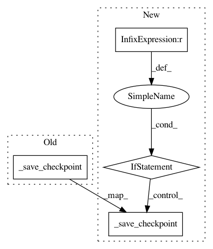

5741cef6049a150d5b73e3f034e8b016fa4a8914,official/modeling/training/distributed_executor.py,DistributedExecutor,train,#DistributedExecutor#Any#Any#Any#Any#Any#Any#Any#Any#Any#Any#Any#,285
Before Change
test_step = self._create_test_step(strategy, model, metric=eval_metric)
// Step-0 operations
_save_checkpoint(
checkpoint, model_dir, checkpoint_name.format(step=current_step))
if test_step:
eval_iterator = self._get_input_iterator(eval_input_fn, strategy)
eval_metric_result = self._run_evaluation(
test_step, current_step, eval_metric, eval_iterator)
After Change
test_step = self._create_test_step(strategy, model, metric=eval_metric)
// Step-0 operations
if current_step == 0 and not latest_checkpoint_file:
_save_checkpoint(
checkpoint, model_dir, checkpoint_name.format(step=current_step))
if test_step:
eval_iterator = self._get_input_iterator(eval_input_fn, strategy)
eval_metric_result = self._run_evaluation(
test_step, current_step, eval_metric, eval_iterator)
In pattern: SUPERPATTERN
Frequency: 3
Non-data size: 4
Instances
Project Name: tensorflow/models
Commit Name: 5741cef6049a150d5b73e3f034e8b016fa4a8914
Time: 2020-04-15
Author: yeqing@google.com
File Name: official/modeling/training/distributed_executor.py
Class Name: DistributedExecutor
Method Name: train
Project Name: tensorflow/models
Commit Name: f01418596956fdd328dfa2d5795093c3fb6bb172
Time: 2019-10-28
Author: yeqing@google.com
File Name: official/modeling/training/distributed_executor.py
Class Name: DistributedExecutor
Method Name: train
Project Name: KaiyangZhou/deep-person-reid
Commit Name: a0e54ede32afb0d46bf1c6b7835fb163c0cd3a01
Time: 2019-03-24
Author: k.zhou@qmul.ac.uk
File Name: torchreid/engine/engine.py
Class Name: Engine
Method Name: run